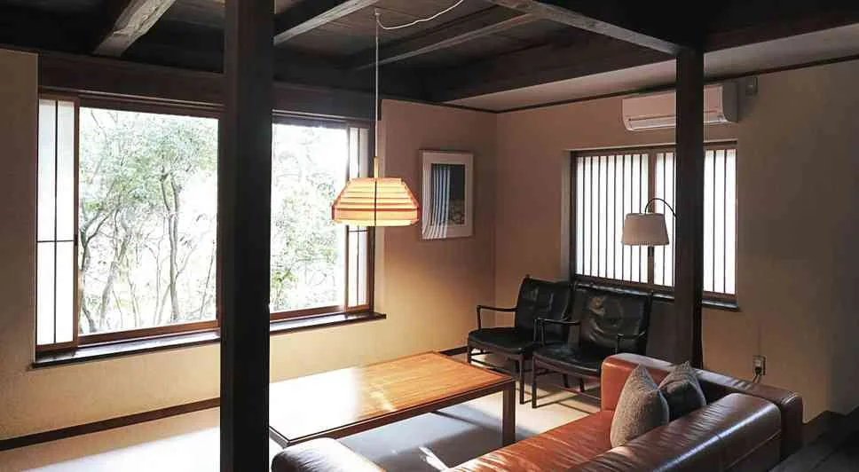
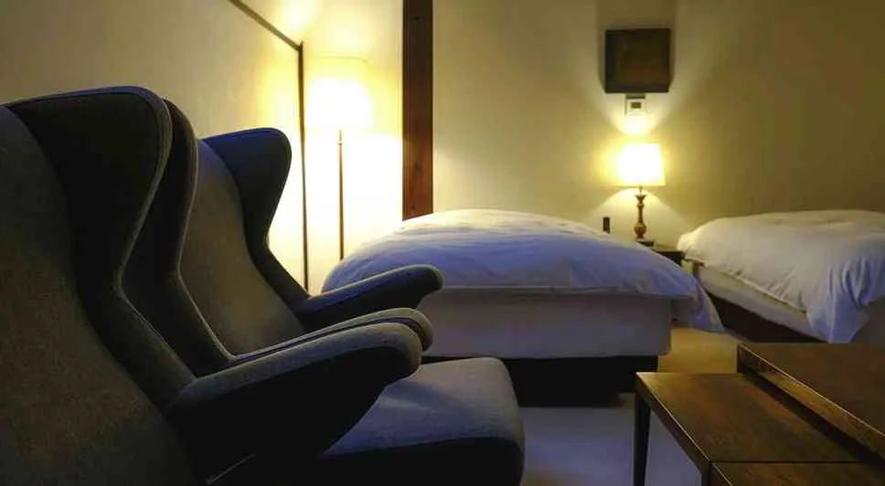

两张独立床
筛选 Twin / 2 Double，并查看客房照片。Hollywood Twin 可能为并床；温泉旅馆的和室、榻榻米或日式床铺不自动视为独立双床。

五个平台的同房型实时报价待查。比价时请统一床型、餐食、取消条件和税费。实际扣款币种以平台结算页为准。
Agoda 与携程已核对酒店入口和目标页面日期；Booking 为酒店名称搜索，一休为酒店页，App 日期接收仍待手机实测。Android Chrome 无法打开 App 时提供同日期网页。官网没有统一 App；无法预填日期的预订系统明确标注“需手选”，可复制酒店与日期。查看逐段核对记录 ↗

Sansou Murata · 大分县由布院 · 12.03–12.05
官网库存有线索，尚未锁房原先考虑的 12/5–7 未查到完整连住记录；官网基础房价与加选餐食不可混为一口价。入住通常 15:00–18:30，退房至 11:00；不将单日库存当成已确认订单。
筛选 Twin / 2 Double，并查看客房照片。Hollywood Twin 可能为并床；温泉旅馆的和室、榻榻米或日式床铺不自动视为独立双床。
以 2 位成人、1 间房、每晚含税人民币价比较；将早餐、晚餐、入汤税、积分抵扣与取消截止日分别记录。
Android Chrome 提供 App 优先入口，均携带所选住宿段；无法打开时使用同日期网页。App 接收日期与真实手机行为尚待实测，打开后核对日期。酒店官网不统一提供 App，部分预订系统需手选日期。
04 / 武雄连续入住 4 晚前确认餐食变化。别府分为 12/2–3 一晚与 12/5–7 两晚；由布院另留 12/3–5 两晚尝试无量塔。首尾酒店与行李寄存需确认，本页已按新分段更新查询入口。Agoda 已改为 18 家酒店的具体页面及带日期 App 入口。Booking 按酒店名称搜索；一休未收录的酒店不放无日期首页链接。